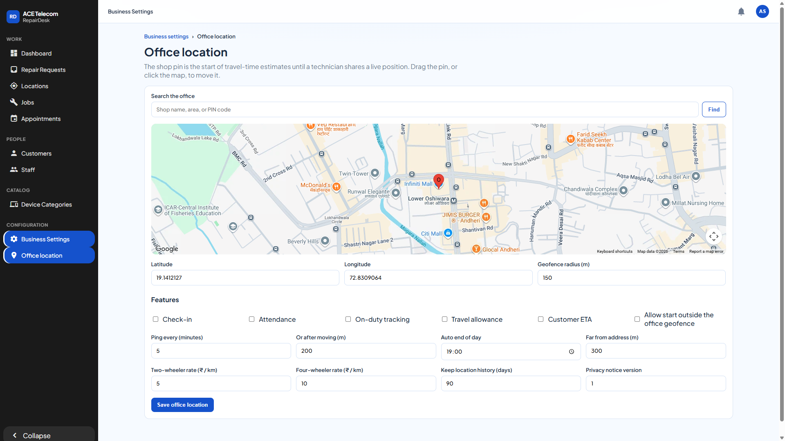

Office location, the map, and the repair queue
Work → Repair Requests is administrator-only. Approve & create job copies the service pin onto a job with the same reference. Reject and Request info are on the same page. Create and approve on the create form does both steps at once.
Configuration → Office location is the shop pin. Drag the pin or click Find, check the radius, then Save office location. Check-in, On-duty tracking, Travel allowance, and Customer ETA stay off until you mean to use them. Attendance shows Start day and End day on the technician’s phone. Allow start outside the office geofence lets a clear fix outside the shop circle start the day and flags it Outside shop. Auto end of day (19:00) closes a day that is still open. Opening a job, Start Repair, and Start Navigating do not check the work day.

Work → Attendance is one row per active technician per India date, including Not started. Columns are name, date, status, start flag, end time, Manual or Auto, and hours. Coordinates are not shown. From and To cover at most 31 days. Download CSV saves the same columns. While Attendance is off, the list still opens and says an administrator turns it on from Office location. Staff see this page and cannot change the switch.

Work → Locations shows O (shop), T (technician), and job pins. Click Refresh. Travel time says from the technician or from the office. Staff see this page and cannot change the office pin.

On a job, click Edit before the search box appears. Search at least 5 letters, paste the customer’s Maps link, or drag the pin, then Save. Start Navigating opens Google Maps. Device categories, brands, business name, booking horizon, and working hours are under Catalog and Business Settings.